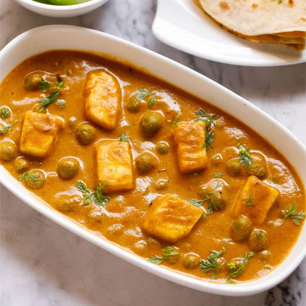

Chicken Tikka Masala

Discription
Chicken Tikka Masala is a flavorful curry made with marinated, grilled
chicken pieces cooked in a rich and spiced tomato-based sauce.
Ingridients
For Chicken Tikka:
- Chicken
- Yogurt
- Ginger-garlic paste
- Turmeric
- Red chili powder
- Garam masala
- Lemon juice
For Sauce:
- Tomatoes
- Onions
- Cream
- Butter
- Garlic
- Cumin
- Garam masala
- Turmeric
- Coriander powder
Steps To Prepare
- Marinate Chicken: Mix chicken with yogurt and spices. Marinate for 2
hours and grill or bake until cooked.
- Prepare Sauce: Sauté onions and garlic. Add spices, tomato puree, and
cook until thick. Add cream and simmer.
- Combine: Add grilled chicken to the sauce and simmer for 10 minutes.
Garnish with cilantro.